2 วัน 1 คืน (ระยอง) และ 3 วัน 2 คืน (จันทบุรี) — ครอบครัว 6 ผู้ใหญ่ + เด็ก 2 ขวบ + หมา (ถ้าสะดวก) เดินทางด้วยรถส่วนตัว 2 คัน เน้นปูราคาถูกและพูลวิลล่ามีโต๊ะพูล
เลือก 2 จุดหมายที่ขับไม่เกิน 4 ชั่วโมงจากกรุงเทพฯ และมีตลาดปูราคาถูกใกล้ที่พัก
| แผน | จุดหมาย | ที่พักหลัก | ราคา/คืน | จุดเด่น |
|---|---|---|---|---|
| 2 วัน 1 คืน | ระยอง บ้านเพ–หาดแม่รำพึง |
Level Up Pool Villa Rayong | 8,900 (อา.–พฤ.) 10,900 (ส.) |
ขับใกล้สุด, โต๊ะพูล, รับหมา, ใกล้ตลาดปู |
| 3 วัน 2 คืน | จันทบุรี แหลมสิงห์–เจ้าหลาว |
วัชระ & ภัทรมน พูลวิลล่า | 7,000 (จ.–พฤ.) 8,000 (ศ.–อา.) |
5 ห้องนอน, โต๊ะพูล, รับหมา, ใกล้ทั้ง 2 หาด + ตลาดปู |
4 นอน / 3 น้ำ · สระ 15×6 ม. · โต๊ะพูล · รับหมา +500 · จอดในบ้าน 2 คัน · ห่างหาดแม่รำพึง 1.2 กม.
โทร 094-554-2463 (คุณปุ๋ย) · 064-564-6514 (คุณบอย) · Line level_up_pool_villa
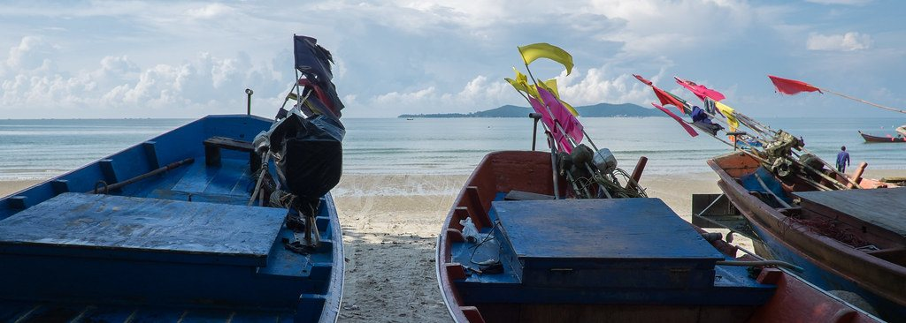
จุดซื้อปู/กุ้ง/หมึกจากเรือประมง ถูกที่สุดของทริป มีบริการนึ่ง–ย่าง คิดเพิ่ม 20–30 บาท/กก.
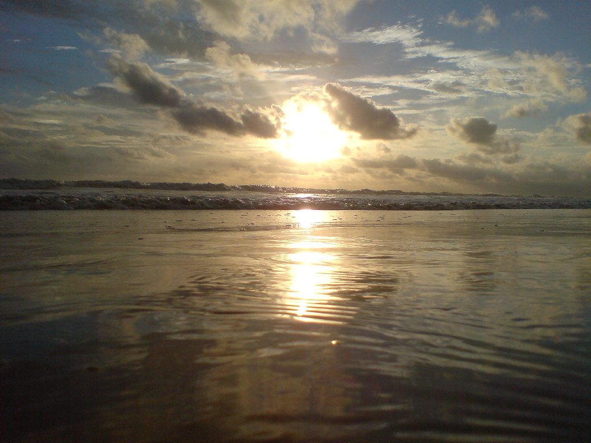
ภาพประกอบหาดทรายยาว เงียบ ไม่พลุกพล่าน เดินเล่นยามเย็นชมพระอาทิตย์ตก เหมาะกับเด็กและผู้สูงอายุ
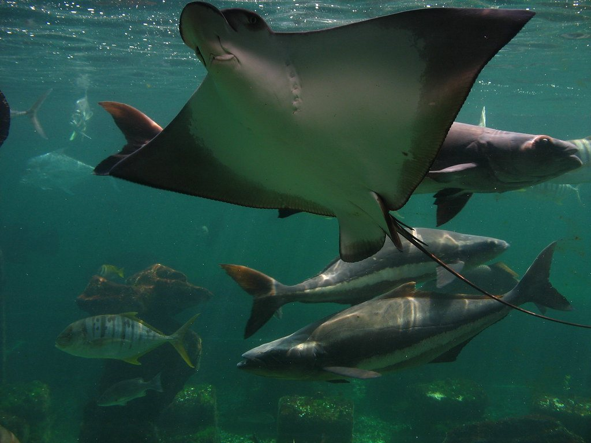
กิจกรรมในร่ม กันแดด กันฝน เหมาะกับเด็ก 2 ขวบ มีอุโมงค์ปลาและตู้แสดงพันธุ์สัตว์น้ำ
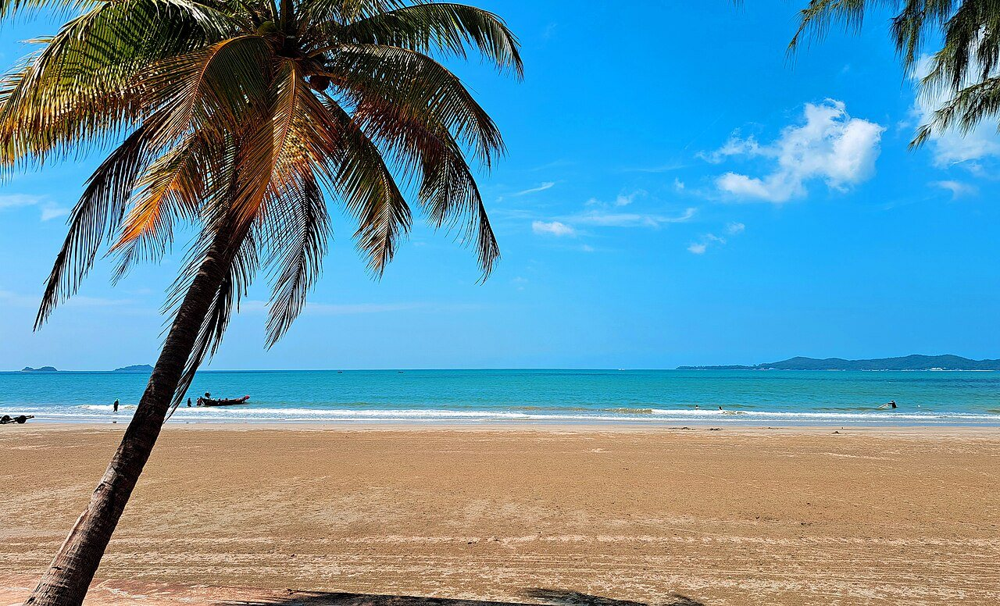
ตลาดของทะเลและของกินเดินเล่น เปิดเช้าถึงประมาณ 19:00 · สะพานปลาบ้านเพไปเช้า 06:00–08:00 จะได้ของลงเรือใหม่
มองเห็นอ่าวและเกาะเสม็ด ขึ้นรถถึงจุดชมวิว ไม่ต้องเดินไกล เหมาะกับผู้สูงอายุ
ใช้บางนา–ตราด/มอเตอร์เวย์ แวะปั๊มทุก 1.5–2 ชม.
ซื้อปู/กุ้ง/หมึกจากเรือประมง — ถูกที่สุดของทริป
ให้ร้านนึ่งย่าง หรือซื้อกลับไป BBQ ที่วิลล่า
กรรเชียงปู 350 บาท, หมึกไข่คั่วหวาน, ข้าวผัดปู · หยุดวันพุธ
กิจกรรมในร่มสำหรับเด็ก 2 ขวบ กันแดด
ให้เด็กเล่นน้ำ/เล่นโต๊ะพูล ผู้ใหญ่เตรียม BBQ
ถ่ายรูปพระอาทิตย์ตก ไม่ต้องเดินไกล
ปูม้า, กุ้งแชบ้วย, หมึกไข่, หอยตลับ, ผัก/ข้าว
งดเสียงดังหลัง 22:00 ตามกฎวิลล่า
ช่วงเช้าแดดอ่อน เหมาะกับเด็กและผู้สูงอายุ
เตรียมขนมปัง/ไข่/กาแฟ/ผลไม้มาเอง
หรือพิพิธภัณฑ์สัตว์น้ำ ถ้ายังไม่ได้ไป
เก็บของ/เช็คของใช้เด็กให้ครบ
ปูม้านึ่ง, ห่อหมกเนื้อปูย่าง, ปลากะพงทอดน้ำปลา
ขอถุงน้ำแข็ง + กล่องโฟมสำหรับเดินทางกลับ
เผื่อรถติดช่วงเย็น
| รายการ | ประมาณการ (บาท) |
|---|---|
| พูลวิลล่า 1 คืน | 8,900–10,900 |
| ค่าสัตว์เลี้ยง (ถ้าพาไป) | 0–500 |
| น้ำมัน + ทางด่วน 2 คัน | 2,400–3,000 |
| อาหารทะเลมื้อเย็น BBQ + เครื่องดื่ม | 3,000–4,000 |
| มื้อเที่ยง 2 วัน + อาหารเช้า | 3,000–4,000 |
| ค่าเข้าพิพิธภัณฑ์/กิจกรรม | 500–1,000 |
| สำรอง/ของฝาก | 1,000 |
| รวมทั้งทริป | 18,800–24,400 |
| เฉลี่ยต่อผู้ใหญ่ 1 คน | 3,100–4,000 |
เด็ก 2 ขวบส่วนใหญ่พักฟรีและไม่คิดค่าอาหารเต็มที่
4–5 นอน / 5 น้ำ · สระเกลือ + สระเด็ก · โต๊ะพูล · รับหมา +300 · ต.บางกะไชย ระหว่างแหลมสิงห์–เจ้าหลาว
โทร 064-352-0637 (หมิว) · 086-081-5691 (เราะ) · ประกัน 2,000 บาท
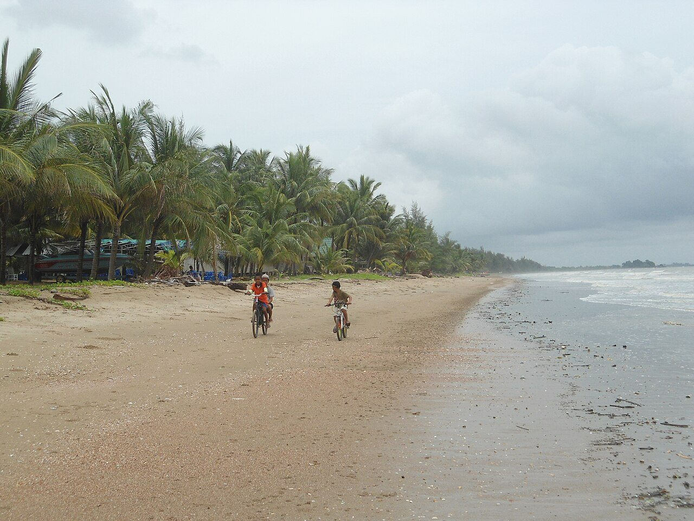
หาดเรียบสงบ ริมปากแม่น้ำจันทบุรี วิวพระอาทิตย์ตกสวย ถ่ายรูปครอบครัวยามเย็น
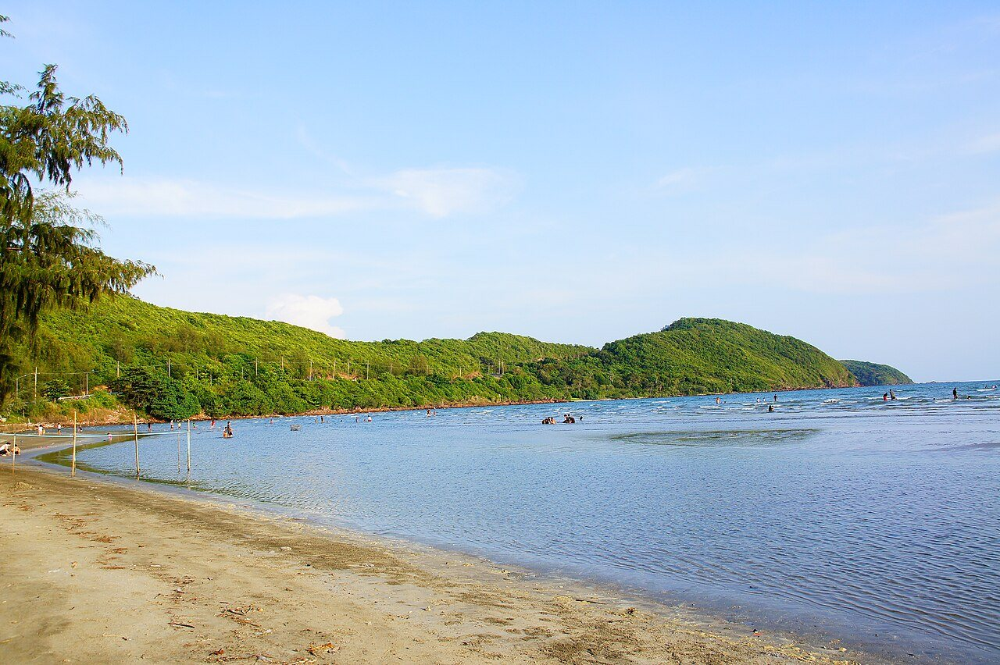
หาดยาว คลื่นเบา น้ำตื้น เด็กเล่นทรายได้ มีร้านอาหารทะเลและคาเฟ่ริมหาดตลอดแนว
สวนน้ำและโชว์โลมา เหมาะกับเด็ก 2 ขวบ — ควรเช็ครอบโชว์และราคาล่วงหน้า
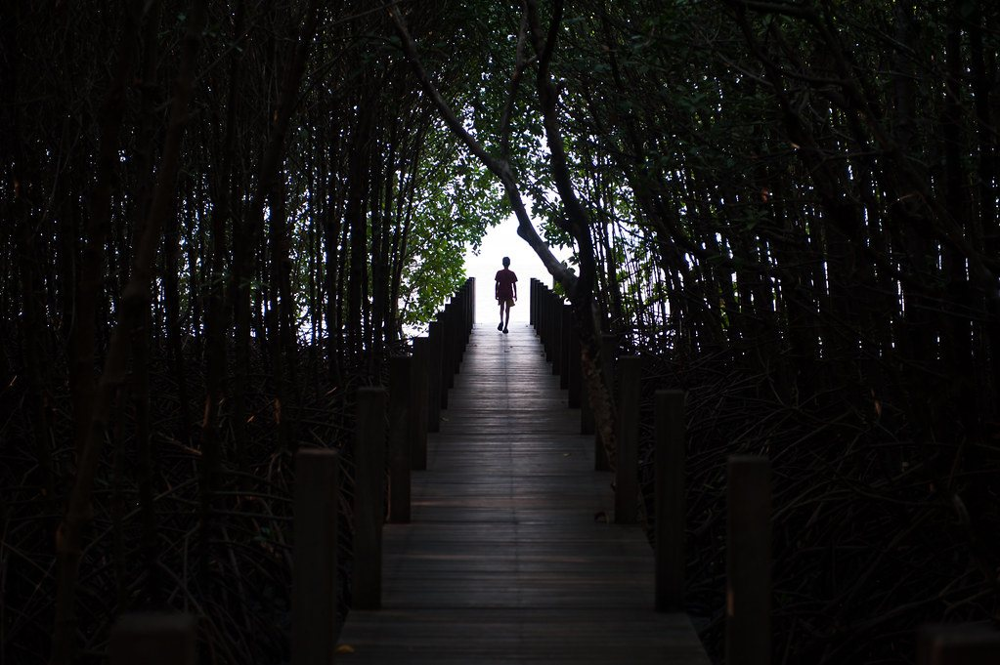
ภาพประกอบศูนย์ศึกษาการพัฒนาฯ ป่าชายเลน มีทางเดินธรรมชาติ ลมเย็น เดินไม่ไกล เหมาะช่วงเย็น
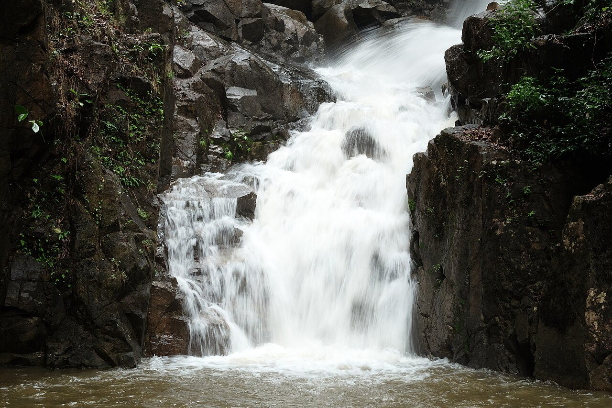
เดินทางราบประมาณ 500 ม. ร่มรื่น มีปลาพลวงชมพู เหมาะกับผู้สูงอายุและเด็ก
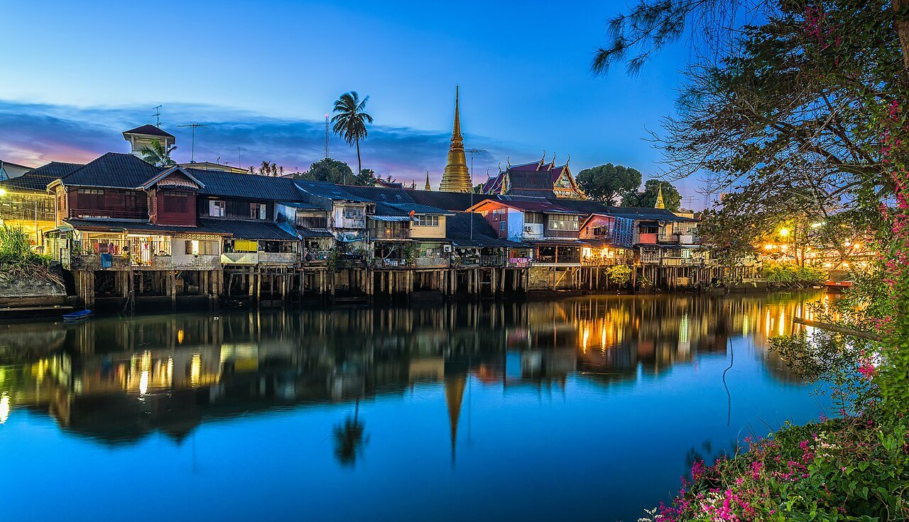
บ้านไม้เก่าโบราณริมน้ำ เดินเล่น ถ่ายรูป คาเฟ่และของฝาก อยู่ใกล้ตัวเมือง
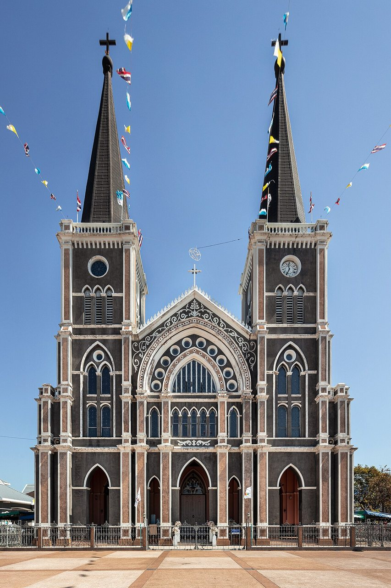
โบสถ์คริสต์สถาปัตยกรรมโกธิกที่ใหญ่ที่สุดในไทย อยู่ติดชุมชนริมน้ำ เดินถึงกันได้
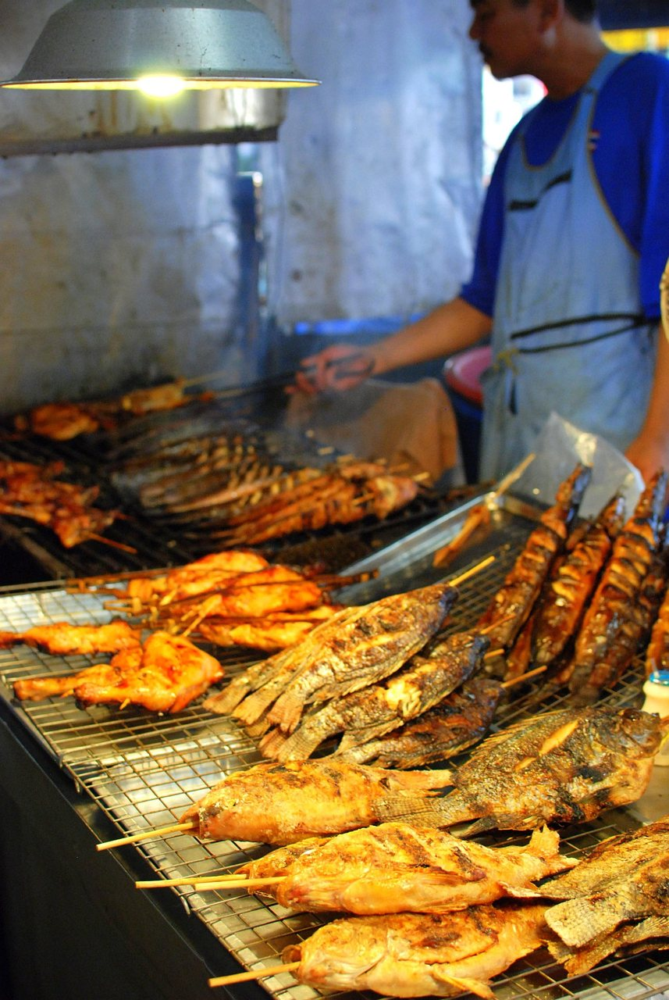
ภาพประกอบตลาดสดใกล้ที่พัก เปิดทุกวัน มีปูม้า/ปูดำ/กุ้ง/หอย ราคาไม่แพง — ไปเช้าจะได้ของดี
2 คัน ใช้มอเตอร์เวย์–สุขุมวิท
ให้เด็กได้เปลี่ยนอิริยาบถ
อิ่มปูมื้อแรกก่อนเข้าจันทบุรี
ทางหลวงหมายเลข 3
ให้เด็กว่ายน้ำ ผู้ใหญ่พักผ่อน
วิวพระอาทิตย์ตก ถ่ายรูปครอบครัว
ปรุงปู/กุ้งที่ซื้อมา + สั่งอาหารท้องถิ่นเสริม
ซื้อปูจากเรือประมงช่วงเช้า ราคาดีที่สุด
หาดยาว คลื่นเบา เด็กเล่นทรายได้
ร้านครอบครัว มีบ่อปลาให้เด็กดู
เช็ครอบโชว์ล่วงหน้า เหมาะกับเด็ก 2 ขวบ
ช่วงบ่ายแดดแรง
เลือกช่วงเย็น ลมเย็น เดินไม่ไกล
ครัวณอาภาอยู่ห่างวิลล่า 2.6 กม.
เดินทางราบประมาณ 500 ม. เหมาะผู้สูงอายุ/เด็ก
เดินเล่น ถ่ายรูป ซื้อของฝาก
อาหารทะเลหรือก๋วยเตี๋ยวปู
ขอน้ำแข็ง + กล่องโฟม
| รายการ | ประมาณการ (บาท) |
|---|---|
| พูลวิลล่า 2 คืน (7,000–8,000/คืน) | 14,000–16,000 |
| ค่าสัตว์เลี้ยง (ถ้าพาไป) | 0–600 |
| น้ำมัน + ทางด่วน 2 คัน | 3,500–4,500 |
| อาหารทะเล 2 มื้อเย็น + BBQ | 6,000–8,000 |
| มื้อเที่ยง/อาหารเช้า 3 วัน | 4,000–5,000 |
| ค่าเข้าซีเวิลด์/น้ำตก/กิจกรรม | 1,500–2,500 |
| สำรอง/ของฝาก | 1,500 |
| รวมทั้งทริป | 30,500–38,100 |
| เฉลี่ยต่อผู้ใหญ่ 1 คน | 5,000–6,300 |
หัวใจของทริปนี้ — ซื้อจากตลาด/เรือประมง แล้วให้ที่พักหรือร้านนึ่งย่าง จะถูกกว่านั่งร้านอาหาร 30–50%
| สินค้า | ราคาตลาดที่เหมาะสม |
|---|---|
| ปูม้า | 350–500 บาท/กก. |
| ปูดำ/ปูทะเล | 450–650 บาท/กก. |
| ปูไข่ | บวกเพิ่ม 100–150 บาท/กก. |
| ค่านึ่ง/ย่าง | 20–30 บาท/กก. |
| ปูม้านึ่งในร้านอาหาร 1 กก. | 500–800 บาท |
ติ๊กแล้วระบบจะจำไว้ในเครื่องนี้ (ใช้เตรียมนัดคุยกับที่พัก)
| ที่พัก | โทร / ช่องทาง | ราคาอ้างอิง |
|---|---|---|
| Level Up Pool Villa Rayong | 094-554-2463, 064-564-6514 · Line level_up_pool_villa | 8,900–10,900 |
| Mountain View Pool Villa Rayong | 090-396-0149 (ยุ้ย) | 4,900–6,500 |
| Sea Sun Lake Poolvilla | ผ่านเพจ banpakpoolvillathailand | 4,000–6,000 |
| บ้านบุศราคัม | 081-354-1534 | 7,500 |
| วัชระ & ภัทรมน พูลวิลล่า | 064-352-0637 (หมิว), 086-081-5691 (เราะ) | 7,000–9,000 |
| Jan-Ja 1 Poolvilla | Line @lby8567n | 6,500–7,500 |
| บ้านพลอยจันท์ พูลวิลล่า | 089-252-4536 | 5,900 |
| Vanilla Coco Poolvilla | ผ่านเพจ vanilla.coco.poolvilla | 7,900 |
| ร้านอาหาร | โทร | จุดเด่น |
|---|---|---|
| เฮียหมู อาหารพื้นบ้าน บ้านเพ | 088-203-8192 | กรรเชียงปู 350, หมึกไข่คั่วหวาน · หยุดพุธ |
| เจ๊ต่าย ปูเป็น บ้านเพ | 038-653-555, 094-693-1051 | ปูม้านึ่ง, ห่อหมกปูย่าง |
| ป้าตาล บ้านเพ (สตรีทฟู้ด) | 089-784-6862 | ซีฟู้ดปิ้งย่างไม้ละ 10 บาท · 16:00–20:00 |
| ยายตุ๊ ซีฟู้ด (เจ้าหลาว) | สอบถามหน้าร้าน | ร้านครอบครัว มีบ่อปลา |
| ลากูน่า ซีฟู้ด เจ้าหลาว | สอบถามหน้าร้าน | ปูไข่ต้มข่า, ห่อหมกมะพร้าวอ่อน |
| ครัวณอาภา (แหลมสิงห์) | สอบถามหน้าร้าน | ใกล้วิลล่า 2.6 กม. |